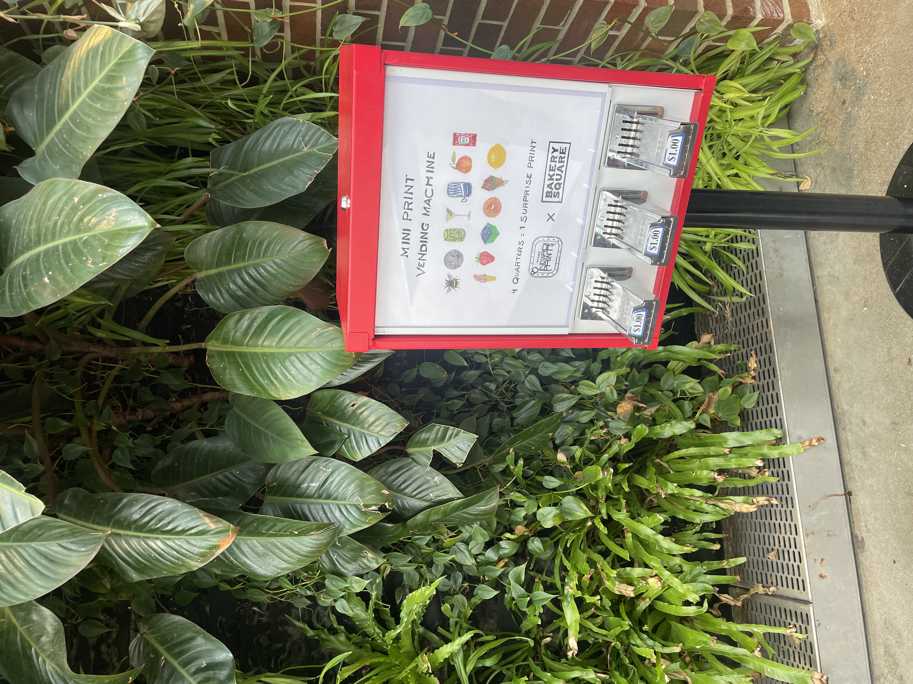
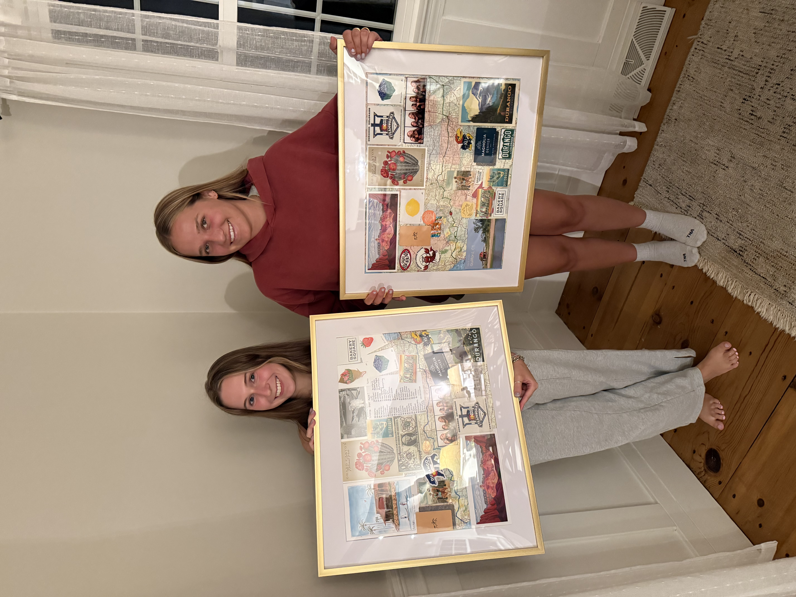

In Pittsburgh we ate some good food and walked around shops. We found a mini print machine where you insert quarters and it will give you an artists mini prints.


In Connecticut we relaxed after driving for so long. We got lobster rolls and also made collages with all the things we collected from our trip. Then we both drove to UVM separately.